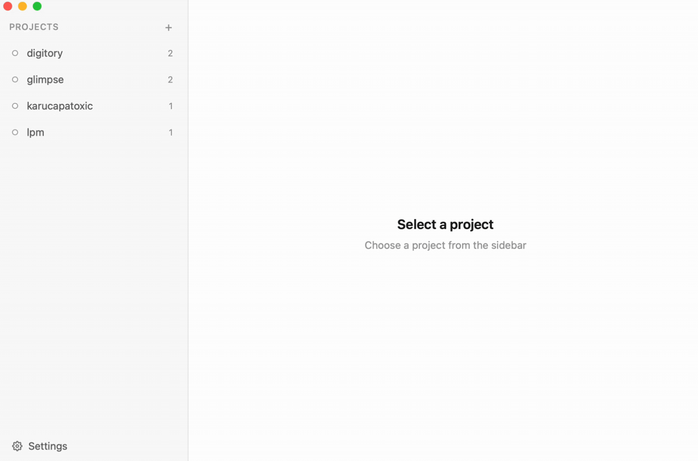
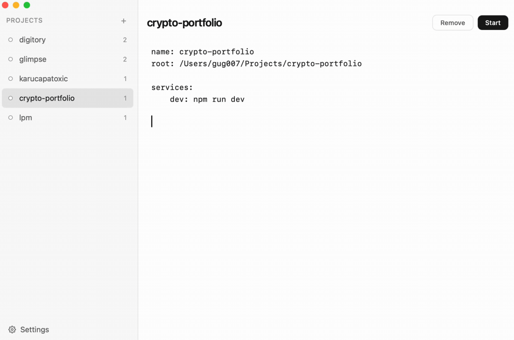

Local Project Manager
Manage dev projects
from CLI or desktop app
Start, stop, and switch between local dev projects instantly. A lightweight tool for developers who juggle multiple services.
Native macOS app with live output and visual editor
Fast, scriptable commands straight from your terminal
curl -fsSL
https://raw.githubusercontent.com/gug007/lpm/main/install.sh
| bash
See it in action
Add a new project
Click + in the sidebar, browse to a directory, and define your services in the built-in editor. Hit Save and the project appears in the sidebar ready to start.

Start a project
Select a project and click Start. All services launch in parallel with live terminal output side by side. Switch between service tabs or view them all at once.

Add an action
Add one-shot commands like linters, test runners, or deploy scripts directly in the editor. Actions appear as buttons you can trigger without leaving the app.

Switch between profiles
Define profiles to run different subsets of services. Toggle between them with the profile switcher in the header — pick default for everyday work or full when you need everything running.

CLI and desktop app, one workflow
Use the CLI, the desktop app, or both. They share the same config, the same state, and the same functionality. Start a project from the app, stop it from the terminal — everything stays in sync.
CLI
Fast and scriptable. Manage projects directly from your terminal with simple commands.
Desktop App
Visual and intuitive. See live output, edit configs, and manage everything from a native macOS app.
Same features, always in sync — mix and match freely
Built for real dev workflows
One command to start
Define your services in a simple config file and launch
everything with
lpm myapp.
Auto-detect frameworks
Automatically detects Rails, Next.js, Go, Django, Flask, and Docker Compose projects.
Instant project switching
Stop one project and start another in a single command. No manual cleanup needed.
Service profiles
Run subsets of your services. Start just the API, or spin up the full stack.
Native macOS app
A desktop app with live terminal output, built-in config editor, and dark mode.
Works with any stack
If it runs in a terminal, lpm can manage it. No Docker or containers required.
Simple, powerful commands
Everything you need to manage local projects, nothing you don't.
lpm <project>
Start in background
lpm start <project>
Start and open terminal
lpm switch <project>
Stop all, start another
lpm kill [project]
Stop a project (all if none given)
lpm init [name]
Create config from current directory
lpm edit <project>
Open config in $EDITOR
lpm list
List all projects
lpm status <project>
Show project details
lpm open <project>
View a running project's live output
lpm run <project> <action>
Run a project action
One config file. That's it.
Define your services, group them into profiles, and add one-shot actions.
name: myapp
root: ~/Projects/myapp
# Long-running services — started with lpm start
services:
api:
cmd: python manage.py runserver
cwd: ./backend
port: 8000
frontend:
cmd: npm run dev
cwd: ./frontend
worker: celery -A backend worker
# Named subsets of services
profiles:
default: [api, frontend]
full: [api, frontend, worker]
# One-shot commands — run from app or CLI
actions:
test: pytest
migrate:
cmd: python manage.py migrate
cwd: ./backend
confirm: true
deploy: ./scripts/deploy.shServices
Long-running processes. Use string shorthand or full config with
cwd,
port,
env.
Profiles
Named groups of services. Start a subset with
lpm myapp -p full or pick from
the app.
Actions
One-shot commands. Run from the desktop app or CLI with
lpm run myapp deploy.
Get lpm
Free and open source. Available for macOS (Apple Silicon & Intel) and Linux.